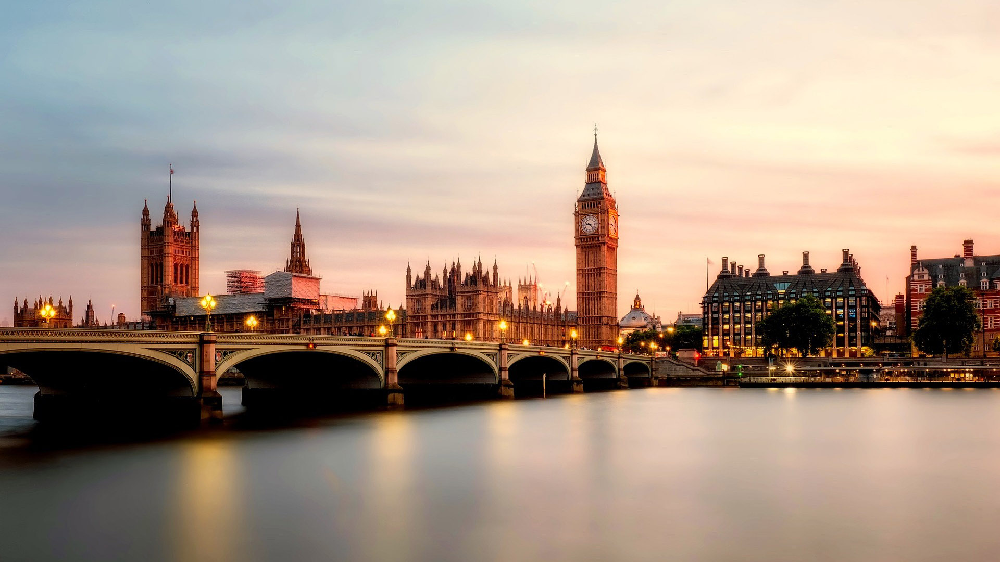
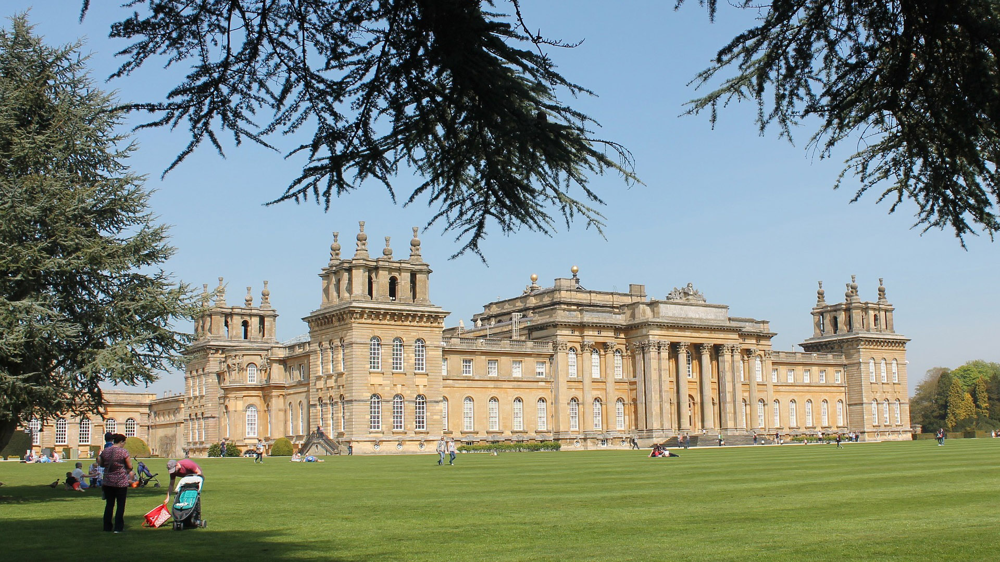

Англія — це найбільша історична частина Великої Британії, яка сформувала сучасний світ завдяки промисловій революції, колоніальній історії, англійській мові та всесвітньо відомій поп-культурі від Шекспіра до The Beatles.
Британський монарх офіційно володіє всіма неокільцьованими лебедями-шипунами на відкритих водоймах країни, а також усіма китами, дельфінами та осетрами в прибережних водах.
Віндзорський замок є найстарішим і найбільшим житловим замком у світі. Він служить резиденцією для британських монархів уже майже 1000 років.
У лондонському Тауері обов'язково мають жити щонайменше шість ворон. За легендою, якщо птахи покинуть фортецю, королівство та сам Тауер упадуть.
Англійці є одними з найбільших споживачів чаю у світі. Щодня вони випивають близько 100 мільйонів чашок, що у 20 разів більше, ніж жителі США.


В Англії існує обов'язковий збір за перегляд кольорового телебачення в прямому ефірі — TV Licence (близько £170 на рік). Спеціальні фургони-детектори їздять вулицями та вловлюють сигнали з будинків неплатників. За несплату цього збору загрожує величезний штраф, а злісних ухилянтів можуть відправити до справжньої в'язниці.
За законом, який діє ще з XII століття, британський монарх (зараз це Чарльз III) володіє всіма некільцьованими німими лебедями на відкритих водоймах країни. Більше того, королю належать усі «королевські риби» — кити, дельфіни та осетри в радіусі 3 миль від узбережжя Великої Британії.
У Глостерширі щорічно проходять шалені Куперсхілдські сирні перегони. З крутого і дуже слизького пагорба запускають круглу головку сиру Double Gloucester, яка розганяється до 110 км/год. Натовп людей кидається за нею навздогін. Переможець, який упіймав сир, забирає його як приз, але платить за це вивихами, переломами та струсами мозку.
Довгий час вважалося, що в будівлі Парламенту юридично заборонено помирати. Це міф, але в палатах Парламенту досі офіційно за заборонено носити лицарські обладунки (закон 1313 року). Також там суворо заборонено використовувати штампи або наліпки з брутальним зображенням монарха «догори дриґом» — це вважається державною зрадою.
У лондонській фортеці Тауєр постійно живуть щонайменше шість чорних круків. Існує старовинне повір'я: якщо птахи покинуть фортецю, Британська імперія впаде. За ними доглядає спеціальний доглядач (Ravenmaster), а самим птахам про всяк випадок злегка підрізають крила, щоб вони не полетіли.